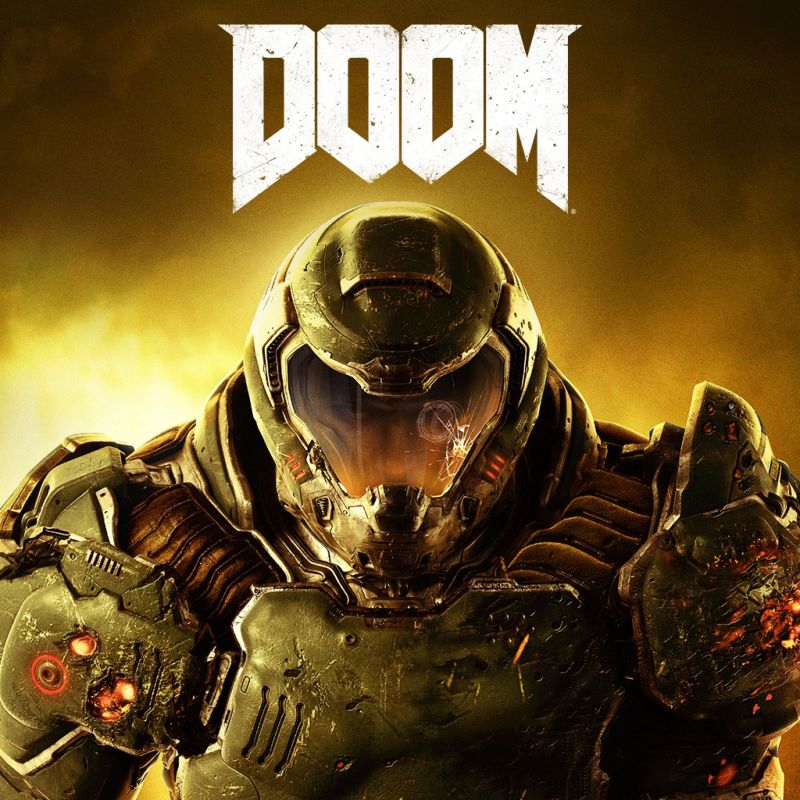
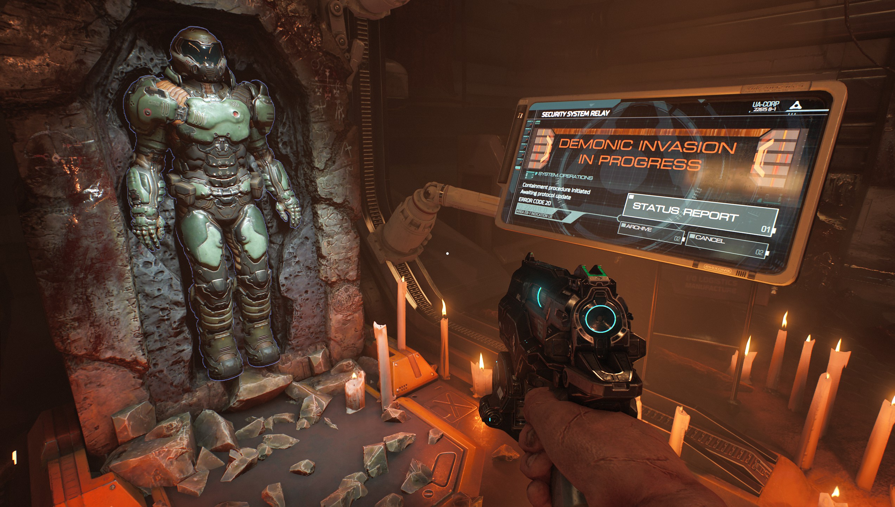
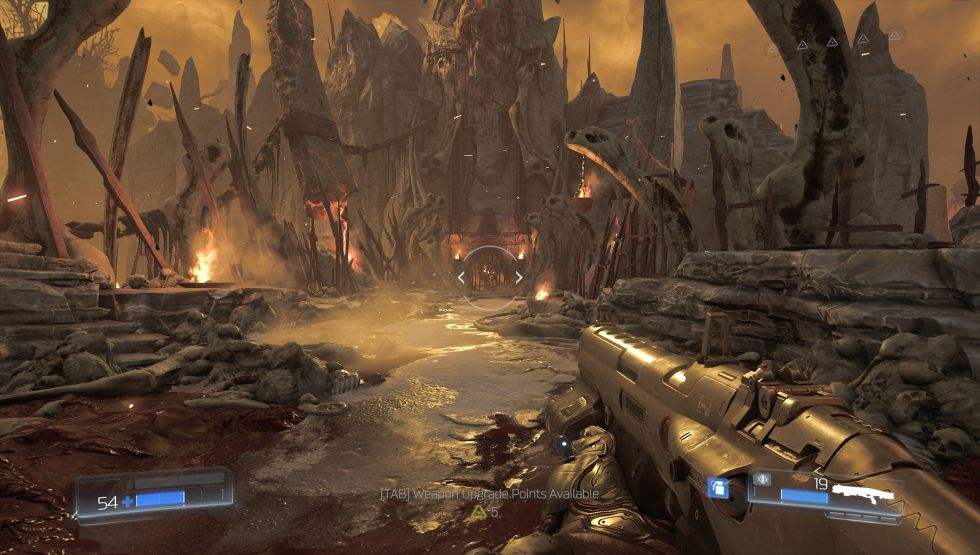
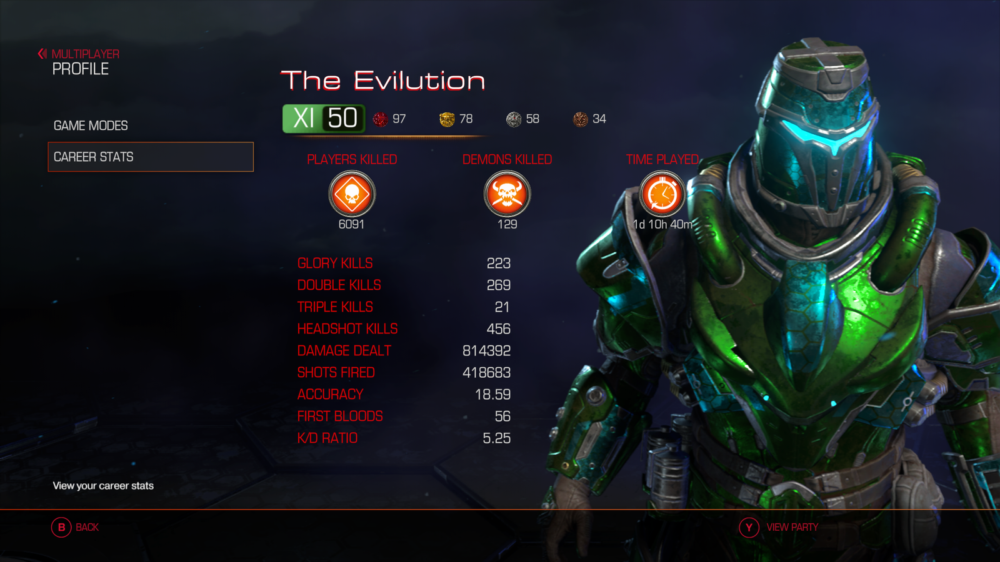

DOOM(2016)
Introduzione
DOOM (conosciuto come DOOM 4 durante lo sviluppo) è un soft reboot
del franchise di DOOM prodotto da Id Software e pubblicato da
Bethesda Softworks. Il gioco è stato rilasciato il 13 Maggio 2016 ed è attualmente disponibile su
PC, PS4, Xbox One e Nintendo Switch il 10 Novembre 2017
Trama

Il gioco è ambientato su Marte in un laboratorio UAC invaso dalla forze dell'inferno. Il
DOOM Slayer si risveglia incatenato ad un sarcofago, dopo essersi liberato e aver riottenuto la sua armatura
Praetor attraversa la superficie marziana per riavviare il sistema satellitare della base. Per la base si possono
trovare sparse registrazioni della dottoressa Olivia Pierce, dove si nota una palese fissazione della ricercatrice per l'inferno e incoraggia
lo staff del laboratorio ad aprirne i portali, risultando nello sterminio generale e nel collasso della base. Contattato dal preidente della
UAC Samuel Hayden, uno dei pochi soppravvissuti all'incidente, il protagonista viene guidato
attraverso alla base per prevenire il completo collasso della base. Con la guida di Hayden e della IA
chiamata VEGA apprende dai rapporti della diagnostica che le vittime e i danni sono enormi; con l'eccezione di Hayden tutto lo staff è o diventato
un demone o morto orribilmente. Dopo aver stabilizzato la Fonderia in seguito ad un meltdown, il DOOMguy
apprende che il piano di Pierce è quello di usare la torre energetica Argent della UAC per aprire un
portale permanente con l'inferno. Cercando un modo per disattivare la torre, Hayden dice di smantellare delicatamente l'approvvigionamento
energetico in modo da proteggere l'infinita fonte energetica; nonostante le proteste di Hayden DOOMguy distrugge tutti i
pannelli e le loro lenti eliminando completamente le fonti energetiche Argernt nel sistema solare. Una volta raggiunta la cima della torre,
troviamo Pierce con un accumulutaore Argent che attiva prima di saltare nel flusso energetico, che apre un portale temporaneo che trasporta il giocatore
negli inferi. Atterrando nel santuario Kadingir, il giocatore dovrà farsi largo tra le forze infernali per ritornare su Marte. Seguendo l'ologramma
delle prime spedizioni di Hayden DOOMguy riesce a raggiungere il portale e a tornare su Marte. Ritornati alla base
UAC, ora distrutta, si riunisce ad Hayden, che applica un sistema alla tuta che gli permette di
tornare all'inferno quando vuole. Quindi si viaggia verso i laboratori Lazarus alla ricerca di informazioni su Pierce. Passando attraverso il
laboratorio di ricerca avanzata, DOOMguy apprende di un'artefatto infernale chiamato Crogiolo. Necessitando un accumulatore Argent
per tornare all'inferno, DOOMguy esplora i laboratori Lazarus incontrando un Cyberdemone fuggito; ricostruito e riportato in
vita con l'energia Argent. Sconfitto il Cyberdemone e strappato un accumulatore dal suo petto vengono entrambi trasportati all'inferno dove
DOOMguy riesce a finire il demone. Avanzando negli inferi raggiungiamo finalmente la Necropoli. Uccidendo le guardie infernali
DOOMguy recupera il Crogiolo prima che Hayden lo riporti su Marte. Arrivati all'unità di processo centrale di VEGA, l'
IA ti guida in modo da disabilitare la sue unità di controllo, permettendogli di usare la sua immensa
riserva Argent in modo da rispedirti un'ultima volta all'inferno. Usando il Crogiolo distrugge le fonti energetiche che danno energia ai portali
tra MArte e l'inferno ed entra nelle profondità dell' Argent D'Nur. Raggiungendo il nucleo troviamo Olivia Pierce terrorizzata dall'aver realizzato
di essere solamente una pedina, quindi viene colpita da un grosso raggio Argent che la trasforma in un Aracnomante Supremo, che viene sconfitto
quindi dal DOOMguy. Ritornando su Marte vieniamo catturati da Hayden, che ruba il Crogiolo per i suoi fini, insistendo che
nonstante tutto, la ricerca deve continuare per rispondere alle esigenze energetiche dell'umanità. Impossibilitato ad uccidere il DOOMguy
ma preoccupato delle sue interferenze, ci trasporta in una location sconosciuta.
Gameplay

Nonostante alcune similarità a DOOM 3, il gameplay di questo DOOM è
significativamente differente dal predecessore. Il gioco risulta più veloce, con sprint, double jump, il
DOOMguy risulta più veloce di ogni nemico del gioco, ed è inteso che il movimento sia la chiave delle strategie
d'attacco e di difesa. Differentemente da DOOM 3, DOOMguy è equipaggiato per uscire sulla
superficie marziana, parzialmente terraformata in questo reboot, dove la minore gravità del pianeta diventa una feature
del gioco, con il DOOMguy in grado di effettuale lunghi salti, scalare alti ostacoli e sopportre relativamente alte
cadute senza danni. Alcune feature del gameplay vogliono rifarsi ai vecchi giochi della saga:
come nell'originale DOOM (ma diversamente da DOOM 3) non serve ricaricare l'arma, sia le carte
d'accesso che le chiavi-teschio vengono reintrodotte e il numero delle armi non è limitato. A differenza diDOOM 3 non
esistono NPC al di fuori di Samuel Hayden, VEGA, e Olivia Pierce; tutto il personale
UAC è o morto o zombificato. Esistono diverse novità: una è il "karate system"
che permette al giocatore di combattere i demoni in melee. Questa aggiunta permette di finire gtli avversari grazie alle "Glory Kills":
quando il nemico subisce sufficenti danni comincerà prima a brillare di arancione e poi di blu, quando questo avviene possiamo eliminare il domone
con un uccisione teatrale. Il gioco consiste di una successione di arene che vengono sigillate e riempite di orde demoniache, che dovranno essere
annientate per proseguire. Una volta pulita l'area la porta si apre permettorndi di proseguire e di passare un checkpoint.
Un altro elemento di contrasto con DOOM 3 è che le imboscate formate da un piccolo gruppo di nemici in luoghi bui e stretti
elemento centrale del gameplay del predecessore sono presenti, ma molto meno comuni. L'ultima introduzione alla serie
è il moodding delle armi, che ora possono essere potenziate e modificate, insieme all'armatura Praetor permettendo molte strategie
al giocatore.
Multiplayer
Id Software ha collaborato con lo studio Certain Affinity in modo da sviluppare una sezione
multiplayer. Non è la prima volta che questo studio viene chiamato per sviluppare questo tipo di sezioni di gioco:
hanno infatti collaborato allo sviluppo del multiplayer di Halo: the Master Chief Collection, Call of Duty: Ghosts, Halo 4
e molti altri.

Modalità multiplayer:
- Team Deathmatch
- Clan Arena
- Freeze Tag
- Dominio
- Warpath
- Raccolta di anime
- Corsa Infernale
Demoni Giocabili
- Revenant
- Barone Infernale
- Mancubus
- Predatore
- RaccoglitoreDLC
- CacodemoneDLC
- SpettroDLC
Power-ups
- Quad Damage
- Invisibilità
- Rigenerazione
- Rapidità
- Invulnerabilità
Mappe Incluse nel Multiplayer
-
Scavo
Un modesto avamposto minatorio dello UAC
-
Inferno
Una mappa infernale con molti interni e esterni, piena di piattaforme, abissi e piattaforme di teletrasporto
-
Abisso
Un enorme mappa sotto la calotta ghiacchiata di Marte.
-
Tritarifiuti
Questa piccola mappa si trova nell'impianto di smaltimento rifiuti del complesso residenziale
UAC
-
Elica
Luogo di sperimentazione sui demoni per la creazione e sviluppo di armi
-
Perdizione
Un'antica arena popolata da sfortunate anime agonizzanti
-
Sacrilego
Ambientata all'inferno questa mappa offre linee di tiro pulite
-
Calura
Una struttura industriale UAC con muri luccicanti
-
Beneath
Prima di essere teletrasportato sulla Terra, le energie dell'Inferno vengono ammassate in queste caverne